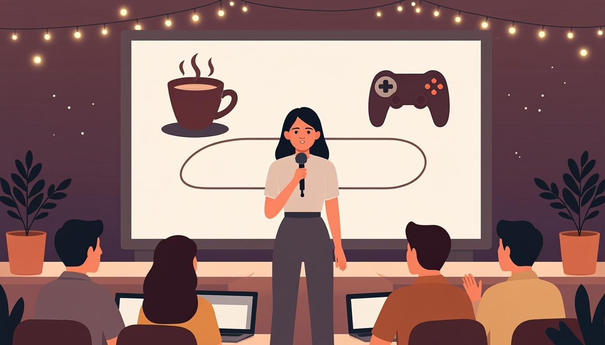

Warm-up
10 mincareer · reflection · milestones🎧 Listen to the questions
❓ Three questions — click a card to open the sentence starters
Listening — Priya's First Talk
10 minaudio + comprehension
🧩 Before you listen: 10 key words
Click a word — a definition and an example will open. The Russian gloss is there to check your understanding. Listen to the recording of all ten words.
🎧 Track 1 — Priya's First Talk
🌍 Extension — your own episode
From the yearly plan — choose any episode you like from the archive: BBC 6 Minute English — archive ↗
Listen for pleasure, and bring one new phrase to share at the start of Lesson 13.
Reading — Tom's Three-Minute Talk
7 mintranscript + form spotting“How I became a QA lead” — Tom at the local meet-up
Nobody plans to become a QA lead. Eleven years ago I was a player who found a bug in a beta test and wrote a two-line report. The studio answered. That letter changed everything.
I have worked in QA for nine years now. I have written more than five thousand bug reports — the first fifty were terrible. I have been leading this team for two years, and I have been teaching juniors since last spring. My rule has not changed since that first letter: a good report respects the reader's time.
What have I learned? Testing is not about finding bugs; it is about protecting the player's evening. In three years, I want to stand here again and say: we have built a studio where quality is nobody's extra job — and everybody's main one. Thank you. The next speaker should be one of my juniors. One of them has been studying very seriously this autumn.
🌍 Extension — British Council: Magazine zone
From the yearly plan — pick any B1/B2 article: learnenglish.britishcouncil.org → magazine-zone ↗
Read it, then retell it in 3 sentences that start with I have just read…
Grammar Review — the Perfect family on one screen
8 mincheat sheet + say it aloudTHE THREE JOBS
- Result, no date → have/has + V3: We have doubled the team.
- Duration, still running → have/has been + -ing: I have been testing since September.
- Finished event with a date → Past Simple: We launched in 2023.
THE FOUR HELPERS
- just — a moment ago · already — sooner than expected
- yet — not done (negatives/questions, end) · still — continuing despite time
- for + period · since + starting point
🗣 Say the cheat sheet out loud — then open the cards
From the plan: you own the grammar only when you can explain it. Say aloud, in your own words: the difference between have done and have been doing, with one example from your work. Only then open the cards and compare.
🔊 Shadowing — speak along with the speaker
Track A — journey facts (Perfect + dated Simple), Track B — journey processes (Perfect Continuous). Listen to a sentence → repeat it out loud in the pause. Two loops per track. These are also your monologue templates.
Speaking Challenge №1 — My Journey (3 minutes)
15 minrecorded · scored with the teacher🎙 Take 1 — the raw journey 3 PP + 1 PPC + 1 dated fact
🪞 Self-review — rate your take honestly (from the plan)
Listen to Take 1 once. Rate each criterion 1–5 in your notes and find 2 mistakes yourself — before the teacher does.
Module Test 3 — 15 minutes
16 items + 1 speaking taskno peeking at the rules🎙 Part 4 — Speaking: "Experience and duration" (record it)
Three prompts. For each: say one or two full sentences, then click the card to compare with the model.
Homework
≤ 30 minutes in total🧑🏫 Teacher notes
Goal: consolidate and measure the quarter: the student delivers a 3-minute journey monologue with the Perfect quota, explains the grammar in her own words, then passes the 15-minute test without looking back at the rules.
Suggested flow: Warm-up: reflection questions; collect quota candidates → Listening: Priya's talk; extract the structure (start → turning point → now → next) → Reading: Tom's transcript as the genre model; mark every Perfect form → Grammar: the student explains BEFORE opening the cards → Speaking: Take 1 → self-review → Take 2 → Test: one sitting, 15 minutes, note weak spots for Module 4.
Success criteria: the monologue — 3 PP + 1 PPC + 1 dated fact, no paper, ≤3 long pauses; self-review — 2 mistakes found by the student; the test — 70%+ overall.
After the test: Part 1–2 below 60% → Lessons 9–10; Part 3 → Lesson 11. The full error review happens at the start of Lesson 13.
Threads: Tom's "one of my juniors" is the student — quote it in class; the recorded Take 1 becomes the baseline for the June comparison; the "how many / how long / when" frame is exactly the decision Module 4 (will vs going to) will reuse for the future.